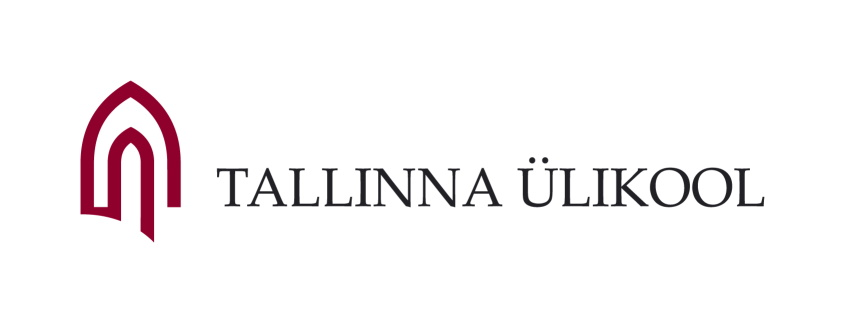

Veeb- ja meediaelemendid
See veebileht on loodud õppetöö raames ja ei sisalda olulist või mõttekat sisu!
Leht on laadimisel
Tallinna Ülikooli ajaloost
2005 18. märtsil 2005 nimetas Riigikogu Tallinna Pedagoogikaülikooli ümber Tallinna Ülikooliks. Nii jõudis lõpule 2002. aastal alanud protsess, milles Tallinna Ülikooli tollastest üksustest osalesid veel Eesti Humanitaarinstituut, Ajaloo Instituut ja Akadeemiline Raamatukogu.
2005 Ülikooli koosseisu asutati Balti Filmi- ja Meediakool, mis on Põhja-Euroopa ainus ülikoolikolledž, kus on võimalik õppida inglise keeles filmi, televisiooni ja meediat. Kolledžiga liitus ka endine Concordia Audentese Ülikooli meediateaduskond.
2006 Valmis Tallinna Ülikooli Mare hoone.
2007 Üleülikoolilise võõrkeeleõppe tarvis asutati Tallinna Ülikooli keelekeskus. Aastal 2015 anti keskuse ülesanded üle humanitaarteaduste instituudile.
2008 Ülikooli koosseisus asutati Eesti esimene liberal arts tüüpi õppeasutus – Katariina Kolledž, mille eesmärk oli pakkuda Eesti venekeelsete gümnaasiumide lõpetanutele võimalikult paindlikku üleminekut eestikeelsele õppele. Eraldi üksusena lõpetas kolledž tegevuse ülikooli 2015. aasta struktuurireformi tulemusel.
2009 Ülikooli hoonetele anti ladinakeelsed nimed. Praegu on need Terra, Silva, Astra, Mare, Nova ja Vita.
2010 Ülikooli juurde asutati Konfutsiuse Instituut, mis on ülemaailmsesse võrgustikku kuuluv hiina keele ja kultuuri keskus, mille peakorter Hanban (Rahvusvaheline Hiina Keele Nõukogu) asub Pekingis.
2010 Loodi ülikooli koosseisu Kommunikatsiooni Instituut, millega liitus Psühholoogia Instituudis asunud reklaami ja imagoloogia osakond. Ülikooli 2015. aasta struktuurireformi tulemusel õpetatakse neid erialasid Balti filmi, meedia ja kunstide instituudis.
2010 Asutati ülikooli koosseisu Õigusakadeemia, mis on Akadeemia Nord õigusjärglane. Ülikooli 2015. aasta struktuurireformi tulemusel õpetatakse õigusteadust ühiskonnateaduste instituudis.
2012 Ülikooliga liitus Pedagoogiline Seminar, mis on märgilise tähendusega sündmus, kuna sellest ajast peale toimub Eestis õpetajakoolitus vaid ülikoolides. Pedagoogiline Seminar asutati 1935. aastal Eesti Naisliidu algatusel pedagoogilise õppeasutusena ning on katkematult tegutsenud sellest ajast peale.
2012 Valmisid Tallinna Ülikooli Nova ja Astra hooned.
2013 Uksed avab Haridusinnovatsiooni Keskus.
2015 Alustavad reformijärgselt tööd kuus instituuti - Balti filmi, meedia, kunstide ja kommunikatsiooni instituut, digitehnoloogiate instituut, haridusteaduste instituut, humanitaarteaduste instituut, loodus- ja terviseteaduste instituut ning ühiskonnateaduste instituut.
Veebis saab kasutada
- Teksti
- Pealkirju
- Tavateksti
- Loendeid (listid)
- Graafikat
- Meediat
Mõned mõisted
- List
- Loend, loendina järjestatud andmete kogum
- Tekst
- Kirjutatud v trükitud sõnades mõtestatud järjend
Gaudeamus
keskaegne tekst, Christian Wilhelm Kindleben (töötlus) / üliõpilaslaul
:,: Gaudeamus igitur
juvenes dum sumus! :,:
Post jucundam juventutem,
post molestam senectutem
:,: nos habebit humus! :,:
:,: Ubi sunt, qui ante nos
in mundo fuere? :,:
Vadite ad superos,
transite ad inferos,
:,: ubi iam fuere. :,:
:,: Vita nostra brevis est,
brevi finietur. :,:
Venit mors velociter,
rapit nos atrociter,
:,: nemini parcetur. :,:
:,: Vivat academia,
vivant professores! :,:
Vivat membrum quodlibet,
vivant membra quaelibet,
:,: semper sint in flore! :,:
:,: Vivant omnes virgines
faciles, formosae! :,:
Vivant et mulieres
tenerae, amabiles,
:,: atque laboriosae! :,:
:,: Vivat et respublica
et qui illam regit! :,:
Vivat nostra civitas,
maecenatum caritas,
:,: quae nos hic protegit! :,:
:,: Pereat tristitia,
pereant osores! :,:
Pereat diabolus,
quivis antiburschius,
:,: atque irrisores! :,:
Meediaelemendid veebilehel
Veebilehel saab kasutada peaaegu kõiki meediaelemente nõnda nagu töölauarakendustest
Pildid
Kui pilt on lihtsalt kujunduse osa (nt bänner jmt)


Kui pilt on tähenduslik, st sisuga seotud (joonis, diagramm jmt), siis kasutame nõnda


Heli
HTML5 võimaldab veebilehel loomuliku (native) elemendina kasutada wav, mp3, ogg ja m4a faile.
Video
HTML5 võimaldab veebilehel loomuliku elemendina kasutada mp4, ogv ja WebM failiformaate
Youtube video
Hobi: golf
Animatsioon